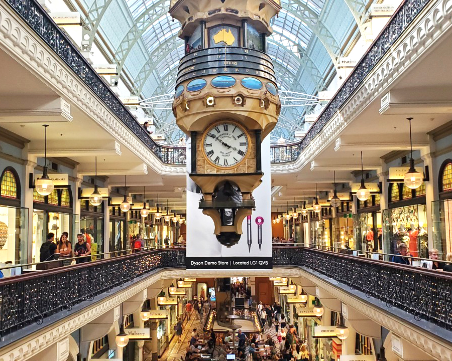

About
時差が1時間しかないから時差ぼけもなし！初日から思いっきり遊べます。（サマータイムは2時間）
東京から直行便で9時間！深夜便を利用すればお仕事終わりに寝てたら着いちゃう！
なんと言っても親日国家！英語が喋れなくても優しくしてくれます。
Cityから少し離れたらすぐに大自然！海に山に絶景がをたくさん見ることができます。
Breakfast
シドニーは朝が早い！カフェは早いお店ではなんと5時から開いてます。
ただし、閉まるのも早くて15時にはほとんどのカフェが閉まるので要注意。
>> Let’s trip
Beach
Cityから電車やバス、フェリーですぐに行けるビーチ！
左は電車とバスでも行けるボンダイビーチ、右はノースシドニーにあるマンリービーチです。
日本ではなかなか乗る機会のないフェリーで行ってみるのもおすすめ！
>> Let’s trip
Circular key
ザ・シドニーといえばここ。オペラハウスにハーバーブリッジ！
絶景を眺めながら食べるアイスクリームが最高！
>> Let’s trip
City
なんでも揃うのがシティ！近代的な高いビルと英国を感じられる古い建築のコントラストが最高！！
>> Let’s trip
Blue Mountain
Cityから車で約2時間。日本では見られないような絶景ブルーマウンテン！
世界遺産の圧倒的な迫力は感動レベル！！最大64度の傾斜のトロッコに挑戦してみてもいいかも。
>> Let’s trip
Queen Victoria Building
シドニーに行ったらぜひ立ち寄って欲しいスポット！クイーン・ヴィクトリア・ビルディング。
英国ヴィクトリア嬢王の誕生日にはセールが行われる店舗もあります。
3階にあるThe roomというティーサロンもおすすめ！！

>> Let’s trip